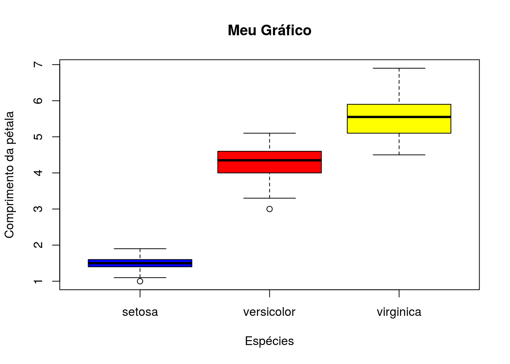

Capítulo 4 Exercícios
- Para iniciarmos nosso trabalho no R precisamos saber importar os dados com os quais iremos trabalhar. Porém alguns passos são fundamentais antes da importação. Qual das opções a seguir contêm as funções, em ordem, que contemplam esses passos.
- setwd(); choose.dir(); as.factor() e readxl()
- setwd(); choose.dir(); readxl()
- library(); setwd(); choose.dir()
- choose.dir(); setwd(); library()
- choose.dir(); setwd()
- Ao importarmos nossos dados é importante saber a extensão em que os arquivos são encontrados (ex: *.csv ou *.xlsx). A função para importação dos dados é determinada pela extensão dos arquivos em que os dados se encontram. Qual as opções abaixo melhor apresenta os comandos responsáveis por importar um arquivo em *.csv e outro em *.xlsx?
- read_csv(file = “dados.csv”, header = TRUE, sep = “,”); read.excel(path = “dados.xlsx”, col_names = TRUE)
- read_csv(file = “planilha.csv”, header = TRUE, sep = “;”); read_excel(path = “planilha.xlsx”, col_names = TRUE)
- read.csv(path = “planilha.csv”, header = TRUE, sep = “,”); read_excel(file = “planilha.xlsx”, col_names = TRUE)
- read.csv(file = “dados.csv”, header = TRUE, sep = “;”); read_excel(path = “planilha.xlsx”, col_names = TRUE)
- read.csv(file = “planilha.csv”, header = TRUE, sep = “,”); read.excel(path = “planilha.xlsx”, col_names = TRUE)
- Durante o processo de importação dos dados é necessário checar se todas as variáveis foram entendidas pelo R como elas devem ser (ex. se determinada variável foi identificada como fator ao invés de numérico ou caracter). Para isso algumas funções são importantes para checar e alterar se necessário. Qual das opções abaixo indica as funções que permitem checar e alterar as variáveis, se necessário.
- checar: View(), summary(); alterar: as.factor(), as.numeric(), as.data.frame()
- checar: View(), str(); alterar: as.factor(), as.numeric(), as.integer()
- checar: str(), as.data.frame(); alterar: as.data.frame(), as.numeric(), as.caracter()
- checar: str(), summary(); alterar: as.caracter(), as.factor(), as.numeric()
- checar: View(), as.data.frame(); alterar: as.integer(), as.numeric(), as.factor()
- O R apresenta em alguns de seus pacotes conjuntos de dados que nos permitem fazer análises. Usando o conjunto de dados chamado iris, o qual pode ser carregado usando a função data(). Qual das opções abaixo apresenta o comando para gerar o gráfico apresentado?
data(iris)
boxplot(Petal.Length ~ Species, data = iris,
col = c("blue", "red", "yellow"),
xlab = "Espécies",
ylab = "Comprimento da pétala",
main = "Meu Gráfico")
- boxplot(Petal.Length, Species, data = iris, col = c(“blue”, “red”, “yellow”), xlab = “Espećies”, ylab = “Comprimento da pétala”, main = “Meu Gráfico”)
- boxplot(Petal.Length ~ Species, data = iris, col = c(“blue”, “red”, “yellow”), xlab = “Espécies”, ylab = “Comprimento da pétala”, main = “Meu Gráfico”)
- boxplot(“Petal.Length” ~ “Species”, data = “iris”, col = c(“blue”, “red”, “yellow”), xlab = “Espécies”, ylab = “Comprimento da pétala”, main = “Meu Gráfico”)
- boxplot(Petal.Length ~ Species, data = iris, col = c(blue, red, yellow), xlab = “Espécies”, ylab = “Comprimento da pétala”, main = “Meu Gráfico”)
- boxplot(Petal.Length ~ Species, data = iris, col = c(“azul”, “vermelho”, “amarelo”), xlab = “Espécies”, ylab = “Comprimento da pétala”, main = “Meu Gráfico”)
- Execute os seguintes comandos no seu R: set.seed(458); teste <- rnorm(100, sd = 0.2). Qual das opções abaixo representam, na ordem, a média, mediana, desvio padrão, variância e amplitude destes dados.
- 0,01; 0,02; 0,12; 0,04; 1,24
- 0,02; 0,01; 0,21; 1,24; 0,04
- 0,02; 0,01; 0,21; 0,04; 1,24
- 0,01; 0,02; 0,12; 0,04; 1,24
- 0,02; 0,01; 0,31; 0,04; 1,20